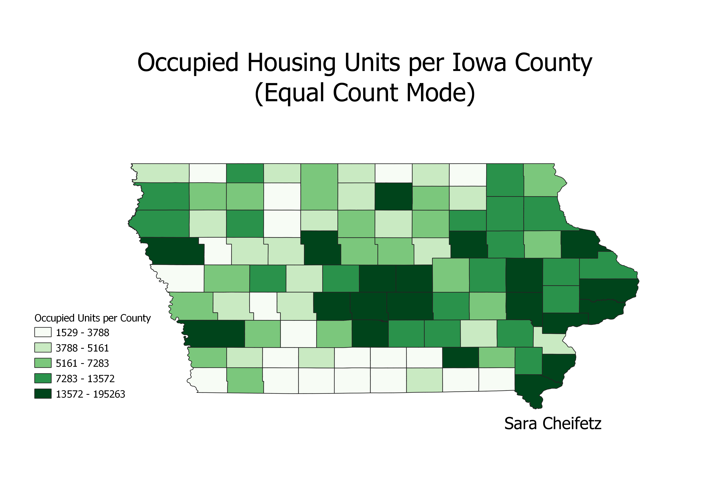
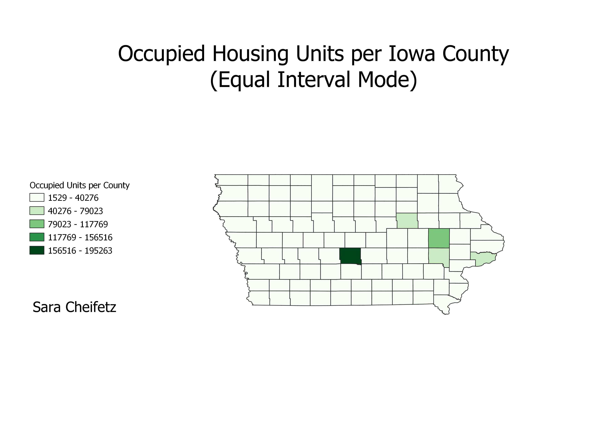
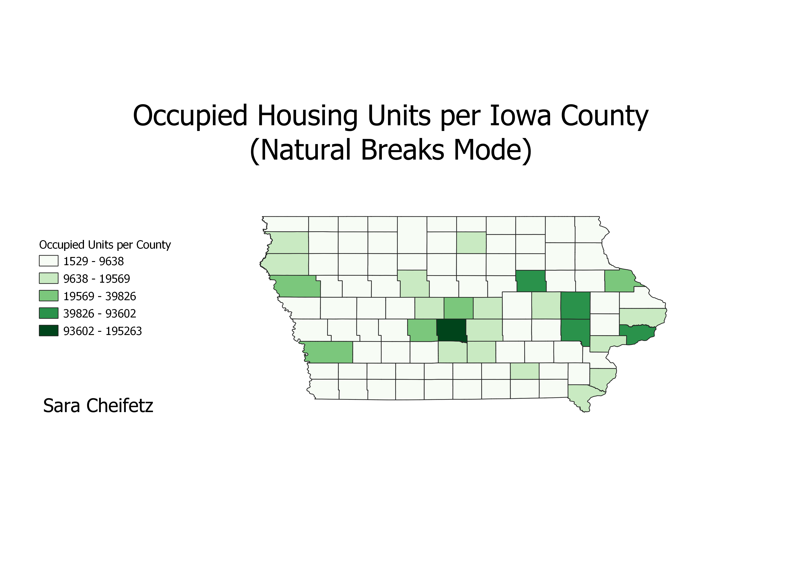

Homework 6 part 2
Sara Cheifetz
These maps are of rationalized data, where the raw numbers are divided by the total values of a data set for each county. This helps eliminate bias in mapping based on population. For example, if a map was created of electricity usage, this could be swayed by simply the number of people living in each area. Rationalizing the data helps to prevent this. My maps are of occupied housing units in each county in the state of Iowa.
Equal Count
This map shows the rationalized occupied housing units per county in Iowa. It is in Equal Count mode, meaning the counties were divided into groups of equal number, and then assigned a color based on their values. The advantage of this method is that every county displays a value, but a disadvantage is that the divisions are created somewhat arbitrarily. Two counties with similar values may be put into different categories, while two counties with vastly different values could be grouped together.

Equal Interval
This map showed the rationalized occupied housing units per county in Iowa and it is displayed in an Equal Interval mode. This means that the data values were divided into intervals, and every county with a value in that interval is grouped together and assigned a color. The advantage to this is that counties with similar values are grouped together, which corrects a disadvantage of the Equal Count map. However, this map has the disadvantage that a lot of the counties fall into the same category and get "washed out" on the map. The counties with much larger values sway the interval breaks, and therefore the map doesn't show the values of counties with less occupied housing units well.

Natural Breaks
This map shows the rationalized occupied housing units by county in Iowa in a Natural Breaks mode. This divides the data values into groups based along natural breaks in the data set, grouping similar data values together. An advantage of this map is that the values grouped together are the most similar, which helps avoid issues caused by outliers in the data set. However, a disadvantage of this mode is that many of the counties are still "washed out" and blend together on the map. There is not much contrast between the counties on much of the map.
